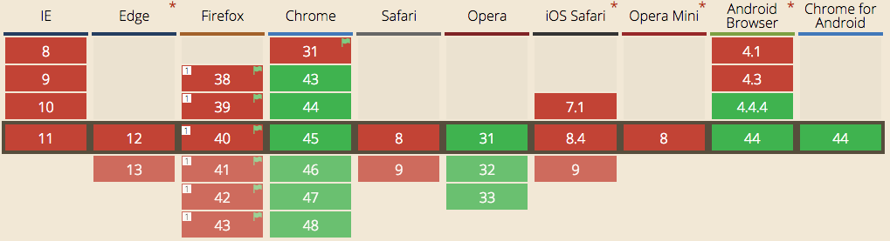

Modern Javascript Development
Next Generation Frameworks and Native Browser Support
Stefan Jäger
steivan
stefanjaeger
Christian Kohler
KohlerChristian
christiankohler
Kevin Denver
ToastShaman
ToastShaman

Vanilla SPA
The good, the bad and the ugly
Aurelia
Example Application
Find a movie based on your travel time
Vanilla Single Page Application
Let's start with a component

What do we want?
<movie-tile title="Dark Night" imageurl="img/darkknight.png"></movie-tile>
Custom Elements
<beautiful-woman></beautiful-woman>
<div>
<div class="hair-mesh">
<span class="..."></span>
<div class="...">
...
</div>
</div>
<div class="eyes">
<span class="..."></span>
<div class="">
...
</div>
</div>
<div class="lips">
<span class="..."></span>
<div class="">
<div class="...">
<span class="..."></span>
<div class="">
...
</div>
</div>
</div>
</div>
</div>
Custom Element Creation
document.registerElement('beautiful-woman');<beautiful-woman></beautiful-woman>
document.registerElement('beautiful-woman', {
prototype: Object.create(HTMLElement.prototype)
});
Custom Element Creation
var BeautifulWoman = Object.create(HTMLElement.prototype);
BeautifulWoman.createdCallback = function() {
this.innerHTML = 'click me!';
this.addEventListener('click', function(e) {
alert('Hello!');
});
};
document.registerElement('beautiful-woman', {
prototype: BeautifulWoman
});<beautiful-woman></beautiful-woman>
One More Thing
<beautiful-woman type="outdoor"></beautiful-woman>
Custom Element Attributes
var BeautifulWoman = Object.create(HTMLElement.prototype);
BeautifulWoman.createdCallback = function() {
this.innerHTML = 'click me, type=' + this.attributes['type'].value;
this.addEventListener('click', function(e) {
alert('Hello, type=' + this.attributes['type'].value);
});
};
document.registerElement('beautiful-woman', {
prototype: BeautifulWoman
});<beautiful-woman type="outdoor"></beautiful-woman>
CODING TIME
Ugly Templates
render(attrs) {
this.innerHTML = '<figure class="movie__item__inner">' +
'<div class="movie__item__inner__img">'
}Can we do better?
Template Strings
Template Strings
Template strings are string literals allowing embedded expressions. You can use multi-line strings and string interpolation features with them.
var a = 5, b = 10;
console.log("Fifteen is " + (a + b) + " and\nnot " + (2 * a + b) + ".");
// "Fifteen is 15 and
// not 20."
var a = 5, b = 10;
console.log(`Fifteen is ${a + b} and\nnot ${2 * a + b}.`);
// "Fifteen is 15 and
// not 20."
Tagged Template Strings
A more advanced form of template strings are tagged template strings. With them you are able to modify the output of template strings using a function.
var a = 5, b = 10;
function tag(strings, values) {
console.log(strings[0]); // "Hello "
console.log(strings[1]); // " world "
console.log(values[0]); // 15
console.log(values[1]); // 20
}
tag`Hello ${ a + b } world ${ a * b}`; // "Bazinga!"CODING TIME
Component and Object oriented syntax
"The Element interface represents an object of a Document"https://developer.mozilla.org/en-US/docs/Web/API/Element
ES 6 Classes
function Animal(name) {
this.name = name;
}
Animal.prototype.sayName = function() {
console.log('my name is: ' + this.name);
};
function SadDog(name, age) {
Animal.call(this, name);
this.age = age;
}
SadDog.prototype.myAge = function() {
console.log('woof! ' + this.age);
};
SadDog.prototype = Object.create(Animal.prototype);
SadDog.prototype.constructor = SadDog;var tristan = new SadDog('Tristan', 2);
tristan.sayName(); // 'my name is: Tristan' ?
tristan.myAge(); // 'woof! 2' ?
function Animal(name) {
this.name = name;
}
Animal.prototype.sayName = function() {
console.log('my name is: ' + this.name);
};
function SadDog(name, age) {
Animal.call(this, name);
this.age = age;
}
SadDog.prototype.myAge = function() {
console.log('woof! ' + this.age);
};
SadDog.prototype = Object.create(Animal.prototype);
SadDog.prototype.constructor = SadDog;var tristan = new SadDog('Tristan', 2);
tristan.sayName(); // 'my name is: Tristan'
tristan.myAge(); // Uncaught TypeError: tristan.myAge is not a function(…)
function Animal(name) {
this.name = name;
}
Animal.prototype.sayName = function() {
console.log('my name is: ' + this.name);
};
function SadDog(name, age) {
Animal.call(this, name);
this.age = age;
}
SadDog.prototype = Object.create(Animal.prototype);
SadDog.prototype.constructor = SadDog;
SadDog.prototype.myAge = function() {
console.log('woof! ' + this.age);
};var tristan = new SadDog('Tristan', 2);
tristan.sayName(); // 'my name is: Tristan'
tristan.myAge(); // 'woof! 2'
class Animal {
constructor(name) {
this.name = name;
}
sayName() {
console.log('my name is: ' + this.name);
}
}
class HappyDog extends Animal {
constructor(name, age) {
super(name);
this.age = age;
}
myAge() {
console.log('woof! ' + this.age);
}
}var daisy = new HappyDog('Daisy', 5);
daisy.sayName(); // my name is: Daisy
daisy.myAge(); // woof! 5
class Animal {}
class Cat extends Animal {
static saySomething() {
console.log('miauw');
}
}Cat.saySomething(); // miauw
class Cat {
constructor() {
this.cute = true;
}
}// ES7 class properties
class Cat {
cute = true;
}
CODING TIME
Movie View
<movie-view> <ul> <movie-tile></movie-tile> <movie-tile></movie-tile> <movie-tile></movie-tile> </ul> </movie-view>
CODING TIME
How do we get the movie-tile into the movie-view?
Modules
Modules
We have two important standards, namely CommonJS and Asynchronous Module Definition (AMD) which let developers use modules in JavaScript. But, the next JavaScript version, known as ECMAScript 6, brings modules into JavaScript officially.
// utility.js
function generateRandom() { return Math.random(); }
function doSum(a, b) { return a + b; }
export { generateRandom as random, doSum as sum }
// app.js
import { random, sum } from 'utility';
import 'utility' as utils; // alternativelyCODING TIME
Let's use real data. But how?
Fetch API
Disclaimer

This is an experimental technology :-)
Fetch API
It is a living standard!
http://fetch.spec.whatwg.org
There is a polyfill!
https://github.com/github/fetch
function reqListener() {
var data = JSON.parse(this.responseText);
console.log(data);
}
function reqError(err) {
console.log('Fetch Error :-S', err);
}
var oReq = new XMLHttpRequest();
oReq.onload = reqListener;
oReq.onerror = reqError;
oReq.open('get', './api/some.json', true);
oReq.send();
fetch('./api/some.json')
.then(function(response) {
return response.json();
})
.then(function(data) {
console.log(data);
})
.catch(function(err) {
console.log('Fetch Error :-S', err);
});
fetch('https://.../discover/movie?runtimeFrom=6528&runtimeTo=8160') // and an API Key :-)
.then(function(response) {
...{
"movies": [
{
"imdbID":"tt4733046",
"title":"The Weight of Chains 2",
"year":"2014",
...
},
{
"imdbID":"tt4514084",
"title":"Far Too Far",
"year":"2015",
...
}
]
}CODING TIME
Function in function in function..
fetch(BASEURL + params).then(function(result) { return result.json(); })Is there a better way?
Arrow Functions =>
Arrow Functions
Arrows are a function shorthand using the => syntax. They support both expression and statement bodies.
// Before...
var circumference = function (radius) {
return 2 * Math.PI * radius;
}
// Arrow with an expression
var circumference = radius => 2 * Math.PI * radius;
// Arrow with an expression (multiple arguments)
var total = values.reduce((a, b) => a + b, 0);
// Arrow with a statement body
var fibonacci = n => {
if (n === 0 || n === 1) return n;
return fibonacci(n - 1) + fibonacci(n - 2);
};
Arrow Functions
Have you ever written this?
...
addAll: function addAll(pieces) {
var self = this;
pieces.forEach(pieces, function (piece) {
self.add(piece);
});
}, ...Unfortunately, the inner function doesn’t inherit the outer function’s this value. Inside the inner function, this will be window or undefined. The temporary variable self serves to smuggle the outer value of this into the inner function.
Arrow Functions
Unlike functions, arrows share the same lexical this as their surrounding code.
var spongeBob = {
name = 'SpongeBob SquarePants',
friends: ['Patrick', 'Gary'],
printFriends() {
// this.name refers to spongeBob because of the arrow function
this.friends.forEach(f => console.log(this.name + ' knows ' + f));
}
}CODING TIME
var/let/const
Javascript Hoisting
Simple, isn't it?
Quiz-Time!
var fn22 = 1;
function gn22() {
if (!fn22) {
var fn22 = 2;
}
console.log(fn22);
}
gn22(); // <-- what's the console output? and why?
Quiz Solution
var fn22 = 1;
function gn22() {
var fn22; // will override the value to undefined
if (!fn22) { // same as "isEmpty(fn22)"
fn22 = 2;
}
console.log(fn22);
}
gn22(); // will result in 2
let
⇨ let is block scoped.
let scopes the variable to the nearest block, this includes for loops, if statements, and others.
var fn22 = 1;
function gn22() {
if (!fn22) { // same as "isEmpty(fn22)"
let fn22 = 2; // would create a new variable
}
console.log(fn22);
}
gn22(); // will result in 1
let is the new var
const
const represents a constant reference to a value.
const baseUrl = 'http://...'; baseUrl = 'http://...new url...'; // Uncaught TypeError: Assignment to constant variable.
const baseUrl = 'http://...'; const baseUrl = 'http://...new url...'; // Uncaught TypeError: Identifier 'baseUrl' has already been declared(…)
const baseUrl = 'http://...'; let baseUrl = 'http://...new url...'; // Uncaught SyntaxError: Identifier 'baseUrl' has already been declared
Quiz-Time 2!
const howard = 'Howard';
const names = ['Leonard'];
names.push('Sheldon');
names.push(howard);
if (true) {
names.pop();
}
console.log(names);
// what's the result? and why?
Quiz-Time 2 Solution!
const howard = 'Howard';
const names = ['Leonard'];
names.push('Sheldon');
names.push(howard);
if (true) {
names.pop();
}
console.log(names);
// ['Leonard', 'Sheldon']CODING TIME
Search View
Use Google Maps Api to get the duration
CODING TIME
Again! Function in function in function..
search(from, to, function(result) { ... })I guess there is a better way, right?
Promises
A promise made is a debt unpaid.
Promises - Callback Hellss
function readdir(source) {
fs.readdir(source, function(err, files) {
if (err) console.log('Error finding files: ' + err)
else {
files.forEach(function(filename, fileIndex) {
console.log(source + filename);
if (S(filename).endsWith('.jpeg')) {
gm(source + filename).size(function(err, values) {
if (err) console.log('Error identifying file size: ' + err)
else {
console.log(filename + ' : ' + values);
aspect = (values.width / values.height);
widths.forEach(function(width, widthIndex) {
height = Math.round(width / aspect);
console.log('resizing ' + filename + 'to ' + height + 'x' + height);
this.resize(width, height).write(destination + 'w' + width + '_' + filename, function(err) {
if (err) console.log('Error writing file: ' + err);
})
}.bind(this));
}});}});}});}
Promises
A Promise represents a proxy for a value not necessarily known when the promise is created. It allows you to associate handlers to an asynchronous action's eventual success value or failure reason.
doMyLaundry().then(clothes => {
clothes.forEeach(piece => console.log('I washed a ' + piece));
});
// you can chain promises
doMyLaundry().then(laundry => {
return putOutToDry(laundry);
}).then(ironShirts).then(foldSocks).then(putAway);
Promises
Although promise implementations follow a standardised behaviour, their overall APIs differ. JavaScript promises are similar in API to RSVP.js. Here's how you create a promise:
var later = new Promise((resolve, reject) => {
if (/* everything worked */)
resolve("Stuff worked");
else
reject(Error("Everything is failing!"));
});
// Promise.prototype.then(onFulfilled, onRejected)
later.then(
s => console.log('I was resolved'),
s => console.log('I was rejected'));CODING TIME
App Component
The app is also a component
CODING TIME
Router
router.configure(config => {
config.map([
{ route: "search", component: SearchView },
{ route: "movies", component: MoviesView }
]);
});router.navigate('movies', { duration: duration });
Router
<router-view></router-view>
render(Component) {
this.empty();
this.appendChild(new Component());
}
CODING TIME
Final App
Demo Time
The good, the bad and the ugly
The good ..
1. No dependencies
No breaking changes, no wait time for bug fixes, no aging libraries
The good ..
2. No need to learn a library or a framework
No learning curve, just pure javascript

.. the bad ..
1. Difficult to test (No dependency injector, just ES6 Modules)
import myservice from './services/myservice'
2. Browser support for custom elements is bad (48%)
.. and the ugly.
You would end up writing your own library / framework
The router for example

Aurelia
● ES6, ES7
● Web Components
● No external dependencies (except polyfills)
● Simple conventions
<template>
HTMLTemplateElement

Delta Vanilla SPA - Aurelia
● Dependency Injection with @inject
● Two Way Databinding with @bindable
● Aurelia Bootstrapper and Aurelia Router
Lessons Learned
- If you don't need to support older browsers you can build a single page application almost without any additional libraries.
- Frameworks make it easier for you to write tests!
- Adopt ECMAScript 6 either natively or use transpilers such as Babel.
- Building applications with next gen framework requires less framework specific code.